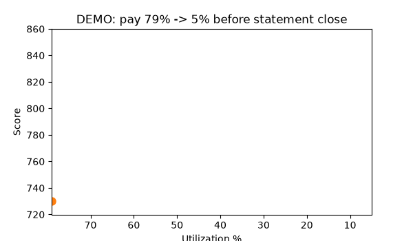
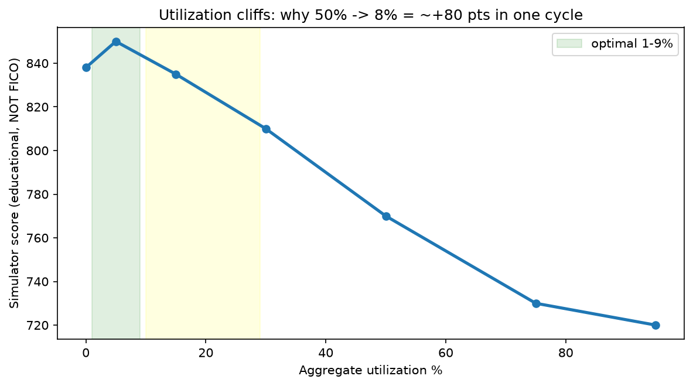
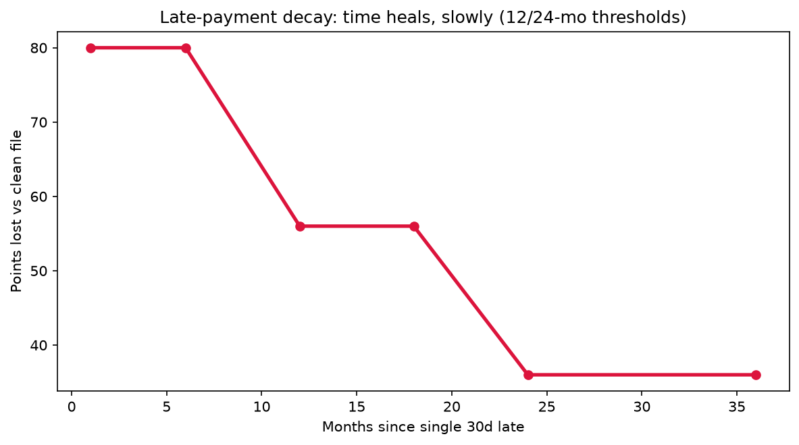
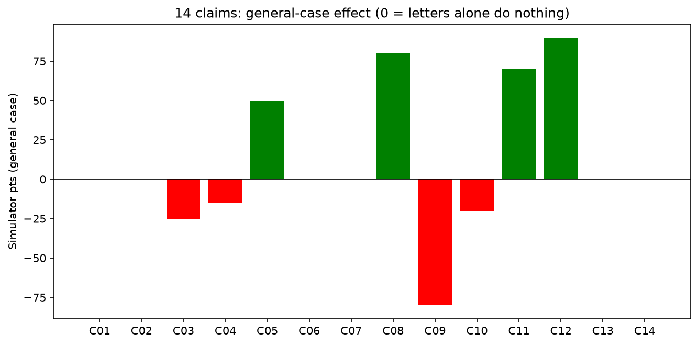

Credit-Truth-Benchmark
▶ Demo (60 seconds)
Animated: 79% → 5% utilization paydown

GIF autoplays on GitHub. Same story as MP4 below. Generated from src/credit_truth/fico_simulator.py — not hand-drawn.
Video with controls (MP4)
GitHub README markdown can’t autoplay video with sound — best practice (2026): GIF above the fold + MP4/YouTube link. Open docs/demo.mp4 directly or embed via release URL.
Verdict: 14 claims (paraphrased, not copied)
| ID | Claim | Verdict | General effect |
|---|---|---|---|
| C01 | +200 in <30d via 609 letters alone | REFUTED general | +0; tail +140 (2 errors) / +270 (errors+paydown) |
| C02 | §609 forces deletion in 30d | MISATTRIBUTION | That’s §611/§623; §609 = disclosure |
| C03 | Closing cards helps | REFUTED | −25 (limit loss → util ↑) |
| C04 | Lower limits help | REFUTED | −15 |
| C05 | Must carry balance / pay interest | REFUTED | pay-in-full wins by ~+50 |
| C06 | “Closed by consumer” matters | REFUTED | 0 — scoring ignores notation |
| C07 | Checking own report hurts | REFUTED | 0 — soft inquiry |
| C08 | Util <30%, <10% optimal; statement-date matters | CONFIRMED | +80 (65%→8%) |
| C09 | Payment history 35%; one 30d late −60…−110 | CONFIRMED | −80 clean file |
| C10 | Hard inquiries −3…−5, 25-mo visible | CONFIRMED nuanced | −5 each; ~12-mo weight |
| C11 | Goodwill / pay-for-delete | PARTIAL conditional | +70 if granted in writing |
| C12 | Authorized-user piggybacking | CONFIRMED attenuated | +90 thin file; FICO 8 dampens |
| C13 | Retention 7y / Ch.7 10y / inquiries 2y | CONFIRMED | FCRA §605 |
| C14 | Monitoring prevents theft | REFUTED as prevention | detection only |
Full logic: src/credit_truth/claims.py. Numbers are simulator-directional, not guarantees; FICO is proprietary.
Charts (reproduced on your machine)
Utilization cliffs

1–9% optimal; 0% slightly suboptimal (no activity); 79%→5% ≈ +130 in simulator.
Late-payment decay

Same 30d late: −80 at 1 mo, −56 at 13 mo, −36 at 30 mo. Clean files hit harder.
All 14 claims at a glance

7 hidden patterns (your PhD seeds)
1. Statement-date ≠ due-date
Paying by due date still reports high util if statement already closed. Pay before statement close; AZEO (all-zero-except-one 1–5%) ≈ +20…+50 vs 30% baseline.2. Per-card vs aggregate
One 95% card hurts (−20) even if aggregate is 20%. Distribute balances; keep every card <30%.3. Late asymmetry + decay
Same late costs more on clean files. Impact ×1.0 (<12 mo), ×0.7 (12–24 mo), ×0.45 (≥24 mo).4. Scorecard non-linearity
FICO segments into ~12 scorecards (bankruptcy/delinquency/thin/age). Thin-file penalty −20 in simulator.5. 609→611 pipeline
609 disclosure enables a 611 dispute but scores +0 by itself. Books conflate them.6. Knowledge-gap moderator
67% think income affects score (FICO/Harris 2026). FICO-knowledge RCT (Homonoff et al., NBER w26048, 400k borrowers) cut past-dues — behavior, not mechanics.7. Utilization cliffs at 10/30/50/70/90%
Matches Experian Sep-2025 table: poor 79% → fair 61% → good 39% → very-good 15% → exceptional 7%. National avg 29%.Run it (Docker = 1 command)
cd credit-truth-benchmark docker compose build benchmark docker compose run --rm benchmark python -m credit_truth.evaluate --out /app/benchmarks/results.json docker compose run --rm benchmark pytest -q # 6 passed # Jupyter: docker compose up jupyter # http://localhost:8888 token credit-truth # Local: pip install -r requirements.txt && PYTHONPATH=src pytest -q # Notebooks: jupyter nbconvert --to notebook --execute notebooks/01_verify_law_and_weights.ipynb --output 01.executed.ipynb --allow-errors
Seed 42 everywhere. benchmarks/results.json holds all cohort deltas + claim verdicts.
Live / real-market check (no personal data in repo)
- Pull your own 3 reports at AnnualCreditReport.com (free weekly in 2026). Compute balances ÷ limits.
- Paste aggregate + max per-card util into
notebooks/02_hidden_patterns.ipynbcell 5 — nothing leaves your machine. - Public aggregates are hard-coded with source + date in
src/credit_truth/data_loaders.pyand re-fetchable via notebook 01. - Economics: 720→760 on $400k/30y ≈ $50k lifetime (practitioner calc — recompute from FRED + CFPB tables before journal use).
PhD path
paper/paper_draft.md: Abstract → Intro → Legal ground truth (§609 vs §611) → Scoring ground truth → Method → Results → Hidden patterns → Threats → Related work (Hoadley QP; Brown youth debt; Agarwal age-of-reason; Homonoff FICO-knowledge RCT) → Conclusion → References. Next: CFPB complaint-panel longitudinal study, statement-date nudge RCT, AU attenuation across FICO versions.
Sources (retrieved 2026-09-30)
- FTC FCRA Mar-2026 PDF (§609 p.47, §611 p.59) · Fed §609 page · CFPB Reg V App O 2026 ($16 cap) · FTC furnisher duties 623(b)/660.4
- myFICO weights 35/30/15/10/10 (live-fetched) · Experian “609 request isn’t a dispute” 2025-03-11 (live-fetched)
- Experian avg 713 + util table 79/61/39/15/7 · FICO Insights Spring-26 avg 714, 48.1% ≥750
- OpenAlex/Crossref: Hoadley 2020; Brown et al.; Agarwal et al.; Homonoff et al. NBER w26048 · Kaggle synthetic CC0/CC-BY-SA
- README craft: Standard-README spec; awesome-readme (+35% star lift w/ hero image); 2026 audit (800–1500 words, GIF above fold, 4 badges); GitHub video workarounds (MP4 via issue URL / YouTube thumbnail / GIF); shields.io docs
Every factual claim → URL + date in docs/SOURCES.md. See docs/ETHICS.md, docs/LIMITATIONS.md.